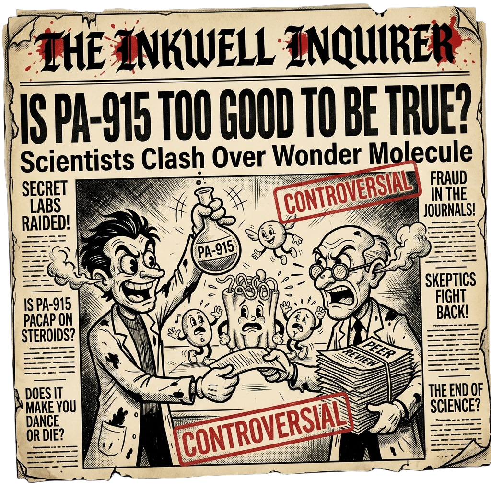

¡Revuelo en la Isla Tintero!
Nueva innovación científica sacude el modelo tradicional
Cronología de Investigación del PA-915
2020 — Diseño químico
Revista: European Journal of Medicinal Chemistry
DOI: 10.1016/j.ejmech.2019.111902
Nuestra historia comienza con el grupo de investigación del Dr. Ichiro Takasaki en la Universidad de Toyama, Japón. Quien mientras trabajaba con su equipo en investigaciones sobre dolor neuropático, sintetizaron 18 derivados del antagonista PAC1 que ya tenían (PA-9), buscando algo más potente. PA-915 fue el compuesto ganador de esa búsqueda, identificado originalmente como "compuesto 3d" en 2020, y se demostró que prevenía la alodinia, condición en que estímulos normalmente inocuos, como un roce, se perciben con dolor. Desde ahí, comenzaron a indagar sobre el potencial de este compuesto para otros padecimientos como el estrés.
2022 — Ansiedad
Revista: Biochemical and Biophysical Research Communications
DOI: 10.1016/j.bbrc.2022.09.079
Fue entonces cuando el grupo del Dr. Hitoshi Hashimoto en la Universidad de Osaka tomó el relevo. Sabiendo que el receptor PAC1 no solo regula el dolor sino también la respuesta cerebral al estrés, decidieron probar el PA-915 en modelos animales de ansiedad y depresión. En 2022 publicaron sus primeros resultados: el compuesto logró atenuar todos los comportamientos de ansiedad en ratones sometidos a estrés agudo. Era una señal clara de que este analgésico tenía una segunda vida por delante, y el equipo no tardó en profundizar.
2025 — Efecto antidepresivo
Revista: Molecular Psychiatry
DOI: 10.1038/s41380-025-03209-4
Más adelante, (este fue el estudio "boom") los resultados definitivos llegaron, en septiembre de 2025 se demostró que una sola dosis de PA-915 era suficiente para revertir comportamientos depresivos y ansiosos en ratones con estrés crónico, con efectos que se mantenían hasta ocho semanas, sin generar dependencia ni deterioro cognitivo. A diferencia de otros tratamientos modernos actuales como la ketamina, su perfil era limpio. Lo que nació como un fármaco para el dolor neuropático había terminado proponiendo un nuevo paradigma en psiquiatría: intervenir directamente en el eje del estrés, en lugar de ajustar serotonina o dopamina como se ha hecho durante medio siglo.